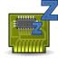

|  | Sleep Quirk Debugger |
Back to the main suspend page
You can check to see if your laptop is already listed using the gitweb interface. You can see the very latest vendor files here:
If you click on any of the fdi files you'll find matches like this:
<match key="system.hardware.vendor" prefix="Apple">
<match key="system.hardware.product" string="MacBook1,1">
<merge key="power_management.quirk.vbestate_restore" type="bool">true</merge>
</match>
<match key="system.hardware.product" string="MacBookPro2,2">
<merge key="power_management.quirk.s3_bios" type="bool">true</merge>
<merge key="power_management.quirk.s3_mode" type="bool">true</merge>
</match>
</match>
So you can see the different quirks in operation.
Very often vendors with similar models have the same quirk, so for instance an IBM T61 may have the same quirks as an IBM T62, and the easiest thing to do is to just copy the t61 entry in /usr/share/hal/fdi/information/10freedesktop/20-video-quirk-pm-ibm.fdi.
If you do not know what quirk you need to use, or the quirk does not work with your system, please open a terminal as root, and then experiment just trying pm-suspend with different options.
Back to the main suspend page